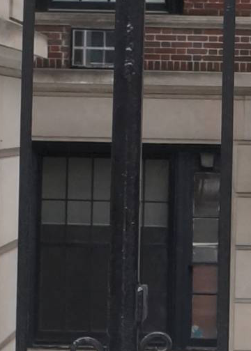

I chose this image because the vertical 5 × 7 format naturally complements the tall architectural elements in the scene. The iron gate and building facade create strong vertical lines that emphasize structure and symmetry within the frame. I framed the image to keep the gate centered, using repetition and alignment to establish visual balance. The depth of the scene adds interest by drawing the viewer’s eye inward toward the doorway beyond the gate. Overall, this composition felt intentional and well-suited to a vertical format that highlights order and stability.